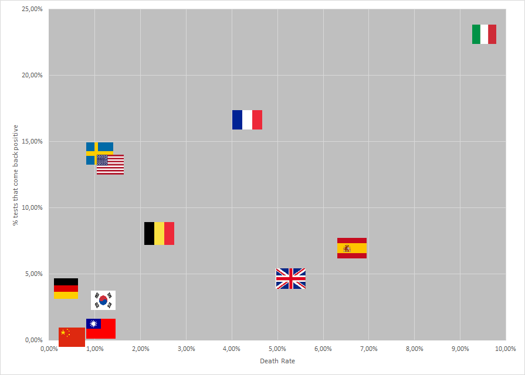

The Under-reporting problem of corona cases in the west.
23 March
Almost 800 people in Italy died on 21 March due to coronavirus. Out of a total of 53.000 known cases of Corona in Italy, 4825 didn't survive. A 9% fatality rate. This is much higher than the reported 4% in China, Where 3255 people died out of 81.000 known cases, or the even lower 1.1% in South Korea, where 102 people died out of 8800 cases.
In Hubei, where Wuhan is situated, the Chinese government did rigorous testing and contact tracing. Door to door testing was also applied to find many cases. It is highly likely that China's 81.000 known cases is close to the truth. In contrast, In the west people are only tested if they have at least flu-like symptoms or a fever. As many cases of Covid-19 are asymptomatic, a lot of cases are missed. Thereby raising the death rate while simultaneously underestimating how widespread the disease is within each country in the west.
Some experts postulated that if the hospitals are not overwhelmed, like what happened in Wuhan and Italy, the Death rate is closer to 0.5-1.0%. The death rate for China as a whole , outside of Wuhan, is ~0.9%. The deaths are increasing rapidly in all western countries due to Covid-19, however only Italy's hospitals are overwhelmed at the moment and other western nation's death rate should approach "only" 1%.
Using the amount of current death and the probable death rate of 1%, it is possible to estimate the current amount of Corona cases within most European countries. If you approximately know how long it takes to from getting infected to dying, you know the amount of Covid-19 infections that many days ago. Then you can calculate from there using the exponential growth in cases until measures are taken.

According to the WHO, the delay between onset of first symptoms and death is 2 to 8 weeks in the severe cases of the disease. Adding this time to the average incubation time of 6 days, the avarage time between exposure till death is probably 3 to 4 weeks. [Source, page 14]
Estimated number of cases in France.
- On 22 March there were 674 official deaths in France attributed to Corona. As the french hospitals aren't overwhelmed yet, The death rate should base about 1%. So this means there were about 60.000-70.000 cases 3 weeks ago (= 1 March). As the Deaths now were infected 3 weeks ago or earlier.
- Assuming exponential growth of 24% daily, the number of cases doubles every 3 days. A growth of 40% results in a doubling every two days while 19% causes a doubling time of 4 days. This, however, assumes no measures. So this growth rate only occurred before the measures that started on 14 March. So from 1 March until 14 March, we could assume the number of cases double every 3 days. There would be 900.000 - 1 million cases on 14 March.
- Starting on 17 March, a national lockdown started. Between the 14th and 17th, march new cases probably slowed down a lot because of the measures starting 14 march. However, the measures weren't very strict nor did everyone comply, assuming the rate of new infections was slowed sufficiently to reduce the doubling time to 10 days, on 17 March there were 1.2m-1.3m cases.
- With the national lockdown, the infection is unlikely to spread much further. But as the untested cases aren't isolated, they could still infect cohabitants. The real cases would probably still rise for a few days, though even slower than before, before starting to die out. The number of current (22 March) Corona cases in France is likely In the ballpark of 1.3m-1.5m, while this is far from an accurate calculation, it is unlikely to be 10 times higher or lower than this number.
- These 1.4 million is the cumulative cases, not the current cases. Some will likely be recovered by now. If the death rate is 1%, the recovery rate us 99% and 100 times more patients recovered then died. This put the final activate cases at 1.3m give or take a couple hundred thousand cases.
- As we estimate that there are 1.3m cases and only 16.000 positively tested cases. About 1.2% of the total cases have been tested.
It is highly likely that most western nation has an underestimation of number of corona cases of this magnitude, as the percentage of positives is high. Germany seems to be one exception among western nations. Germany also has a noticeably lower death rate than other western nations. Strengthening the assumptions that the real death rate is lower because of the underestimation of the number of covid-19 cases.
| Countries | Cases confirmed | Test done cumulative | % positives | Source |
|---|---|---|---|---|
| Italy | 59.138 | 258.402 | 22.9% | Source, last two columns |
| France | 6.153 | 36.747 | 16.7% | Source, Figure 4 |
| Sweden | 2.016 | 14.300 | 14.1% | Source, Table2 |
| United States | 33.277 | 243.823 | 13.6% | Source |
| Belgium | 1.486 | 18.360 | 8.1% | Source |
| Spain | 25.496 | 350.000 | 7.2% | Source |
| United Kingdom | 3.269 | 64.621 | 5.1% | Source |
| Germany | 6.540 | 167.000 | 3.9% | Source, First Paragraph |
| South Korea | 8.961 | 338.036 | 2.7% | Source |
| Taiwan | 195 | 25.746 | 0.7% | Source |
| Guangdong Province, China | 1.415 | 320.000 | 0.4% | Source, Page 9 |
A number of Asian countries that had experienced from the SARS epidemic in 2003 seemed to do better in the testing area, like Taiwan, China, and South Korea have much fewer % of the tests come back positive. In other words, they test a broader population. In most western countries they only test suspected cases ( people with fever, etc...), which causes much more tests to come back positive. This also means that the scale of the epidemic in those countries is actually unknown. Due to the many missed cases, the death rate also appears higher.
